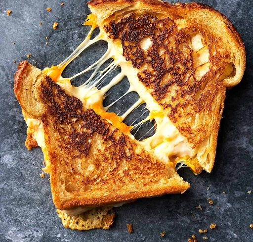
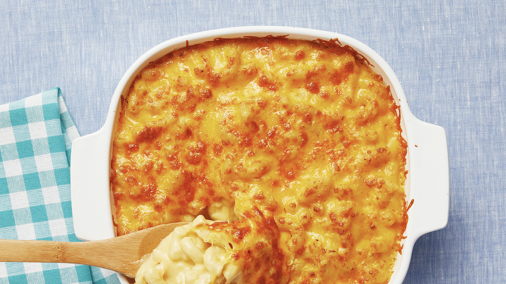

Recipes
Spaghetti

A beginner-friendly recipe for the staple food of traditional Italian cuisine.
Origin: Italian
Source: Angelica Wang Recipe
Category: Main Dish
Recipe Ingredients
- Dry spaghetti noodles
- Pasta Sauce
- Cheese
Recipe Steps
- In a pan, add the pasta sauce and just enough water to cover the bottom of the pan.
- Bring the mixture to a boil.
- Add the spaghetti noodles to the pan and cook according to the packaging instructions.
- Once the noodles are cooked, plate on a pan and add cheese on top.
Additional Food Images
Grilled Cheese Sandwich
This is a simple recipe perfect for anyone who loves cheese. It would also go great with some tomato soup.
Origin: American
Source: Angelica Wang Recipe
Category: Comfort Food
Recipe Ingredients
- Sliced Bread
- Shredded Cheese
- Olive oil
Recipe Steps
- In a pan with some olive oil, toast 1 side each of 2 slices of bread.
- Once toasted, flip the slices over in the pan.
- Place shredded cheese on 1 of the slices of bread, and then place the other slice of bread on top of the cheese.
- Continue toasting the sandwich until both sides are golden brown.
Additional Food Images
Macaroni and Cheese
A universal comfort food of a variety of baked cheeses layered onto a macaroni.
Origin: American
Source: Angelica Wang Recipe
Category: Main Dish
Recipe Ingredients
- Dry Macaroni Pasta
- Milk
- Shredded Cheese
Recipe Steps
- In a pot, combine dry macaroni pasta, milk, and enough water to cover the pasta and bring the mixture to a boil.
- After the mixture boils, let it simmer until the liquid thickens.
- Add cheese to the pot and mix.
- Plate the pasta and top with more cheese.
Additional Food Images
Double Chocolate Cookies

The daughter of Colleen Van Lent learned to make these cookies at a baking camp at Zingermanns and has tweaked the recipe to fit the taste buds of her siblings. They are extremely sugary so the salt helps to balance it. Note, these cookies are best eaten very quickly.
Origin: Michigan
Source: Van Lent Family Recipe
Category: Dessert
Recipe Ingredients
- Unsalted butter
- Granulated Sugar
- Packed light or dark brown sugar
- Large egg
- Pure vanilla extract
- Semi-sweet chocolate chunks (melted)
- All-purpose flour
- Natural unsweetened cocoa powder
- Baking soda
- Salt
- Semi-sweet chocolate chunks
Recipe Steps
- In a mixing bowl cream together the butter, granulated sugar, and brown sugar.
- Add the egg and vanilla extract and beat well.
- Add the melted chocolate.
- In a separate bowl combine the flour, baking soda, cocoa powder and salt.
- Combine the wet and dry ingredients
- Add the unmelted chocolate chunks.
- Form 15 cookies and place on a baking sheet.
- Cook for 12 to 13 minutes at 350 degrees.
Additional Food Images


Zucchini Fritters

Kay Malan found this recipe for zucchini fritters on a food blog when they were looking for quick and easy dishes to make during undergrad. It uses minimal ingredients and can be done in less than half an hour. They are delicious and filling and go great with dipping sauces.
Recipe Ingredients
- Zucchini
- Egg
- Flour
- Vegetable/seed oil
- Garlic
- Salt and pepper
Recipe Steps
- Combine eggs, salt, and pepper and whisk.
- Add pressed garlic.
- Grate the zucchini and squeeze the moisture out of it.
- Add zucchini and flour and mix.
- Heat oil in pan and add dollops of batter.
- Serve with or without dipping sauce.
Additional Food Images